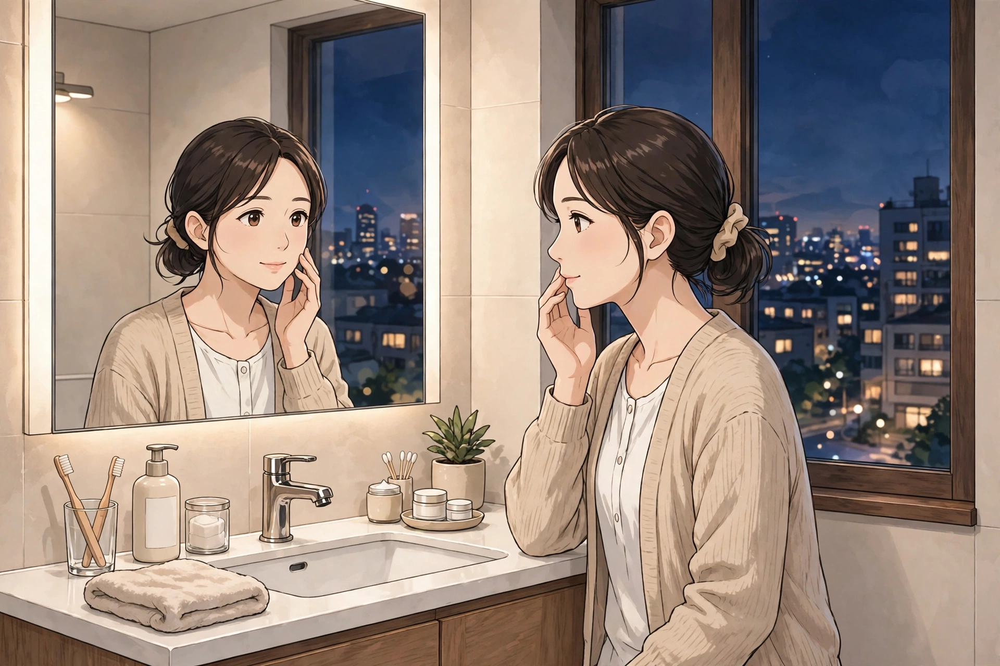

難波で冬の乾燥に気になる肌のくすみ・たるみ｜要因の整理とセルフケア、受診の目安冬の乾燥と肌のくすみ

12月に入ると、難波の街にはイルミネーションが灯り、買い物や忘年会で出かける機会が増えます。外を歩き回った日の夜、鏡を見て「なんだか顔色が冴えない」「フェイスラインが重たく見える」と感じたことはありませんか。暖房の効いた室内と冷たい屋外を行き来する冬は、肌の乾燥とあわせて、くすみ感やたるみ感が気になりやすい時期です。この記事では、肌のくすみ・たるみ感の一般的な解説と、この時期に考えられる要因、冬の外出の日に取り入れやすいセルフケア、そして先に医療機関へ相談したい目安を、断定を避けて整理します。
#難波 冬 乾燥 くすみ#冬 乾燥 肌のくすみ セルフケア#難波 イルミネーション 肌#冬の乾燥と肌のくすみ
１．肌のくすみ・たるみ感とは
「くすみ感」は、一般に、肌の明るさや透明感がいつもより乏しく見える、という感じ方を指す言葉として使われます。「たるみ感」は、頬やフェイスラインのハリがいつもより弱く感じられる、という感じ方です。どちらも見た目の印象に関わる主観的な感じ方で、感じ方や程度は人によってさまざまです。冬は空気が乾き、暖房の効いた室内ではさらに湿度が下がりやすくなります。肌が乾燥すると、表面のきめが乱れて見えたり、光の当たり方で顔色が冴えなく見えたりする場合があります。また、外を長く歩いた日は、寒さで体がこわばり、表情や姿勢が固くなりやすく、顔の印象が重たく見えることもあります。感じ方だけで、その背景を特定することはできません。肌のくすみ全般については、症状別ページ「肌のくすみ｜難波の女性専用サロンでのケアとセルフケア」でも整理しています。この記事では「冬の乾燥と肌のくすみ・たるみ感」に焦点を当てて整理します。あくまで一般的な情報としてお読みください。
２．考えられる要因
冬にくすみ感やたるみ感を意識しやすくなる背景には、次のようなことが関係している場合があります。
- 暖房による室内の乾燥：エアコンやヒーターを使う時間が長くなると、室内の湿度が下がりやすくなります。暖かい室内に長くいる日は、肌のかさつきとあわせて、顔色の冴えなさを意識しやすい方もいます
- 屋外の冷たい空気と寒暖差：イルミネーション見物で外に長くいたり、暖房の効いた室内と屋外を行き来したりする日は、冷たい空気に触れて頬の感覚が変わり、肌の印象がいつもと違って見える方もいます
- 長時間の外出と歩き回った日の疲れ：クリスマスの買い物などで歩き回った日は、足の疲れとあわせて、顔の印象が重たく見えることもあります。冬の乾燥と冷え感については、記事「難波で冬の乾燥と冷え感が気になるときに｜要因の整理とセルフケア、受診の目安」でも整理しています
- 入浴の仕方：熱いお湯に長くつかったり、顔を強く洗いすぎたりする習慣が、肌のかさつきと重なる場合があります。冬は湯船につかる時間が長くなりやすい時期でもあります
- 水分を取る機会の減り：寒い時期はのどの渇きを感じにくく、意識しないと水分を取る量が普段より少なくなる方もいます
- 睡眠のリズムの乱れ：忘年会が続いたり、夜更かしがちになったりする時期は、睡眠のリズムが乱れやすく、翌朝の顔色や目の下の印象が気になる方もいます
- うつむき姿勢の時間が長い：スマートフォンを見ながら歩いたり、寒さで肩をすくめて歩いたりする時間が長い日は、首や肩まわりがこわばりやすく、フェイスラインの印象が重たく見える場合もあります
これらは一例であり、当てはまるものがあっても、それがご自身のくすみ感やたるみ感の背景であると決めつけることはできません。
３．冬の外出の日に取り入れやすいセルフケア
どれも特別な道具はいりません。冬の外出の日の前後に、無理のない範囲で続けやすいものから取り入れてみてください。
- 帰宅後の洗顔と保湿を習慣にする：外から帰ったら、ぬるめのお湯でやさしく顔を洗い、肌がまだ少し湿っているうちに、保湿剤で気になる部分をケアする方もいます。ご自身の肌に合うものを選んでください
- イルミネーション見物の合間に暖を取る：外に長くいる日は、途中で暖かい室内に入って休んだり、温かい飲み物を少しずつ飲んだりして、体を冷やしすぎないよう意識する方もいます
- ぬるめのお湯で入浴する：熱すぎるお湯を避け、ぬるめのお湯にゆっくりつかる方もいます。顔を洗うときは、強くこすらず、やさしく洗う方もいます
- 室内の湿度を意識する：加湿器を使ったり、濡れタオルを干したりして、室内が乾きすぎないよう意識する方もいます。換気もあわせて、こまめに行う方もいます
- 首・肩まわりを軽く動かす：首をゆっくり回したり、肩を軽く動かしたり、背筋を伸ばして深呼吸したりする小さな動きを取り入れる方もいます
- 睡眠のリズムを整える：寝る時間をできるだけそろえたり、寝る前に画面を見る時間を短くしたりする方もいます。寝室の湿度や温度を見直す方もいます
- 温かい飲み物や食事をゆっくり取る：温かい飲み物を少しずつ飲んだり、温かい食事をゆっくり取ったりする時間を大切にする方もいます
セルフケアは、無理のない範囲で行うことが前提です。体調がすぐれない日や、痛み・腫れが気になるときは、セルフケアを控えて、まず医療機関への相談をご検討ください。
なお、肌のくすみ感全般については、記事「難波で気になる肌のくすみ感｜要因の整理とセルフケア、受診の目安」で整理しています。乾燥とあわせて気になるときは、参考にしてください。
４．受診の目安
次のような場合は、セルフケアやサロンでのケアより先に、医療機関への相談をご検討ください。
- 肌の赤みやかゆみ、ひび割れが強く、なかなか治まらない
- 顔の片側だけに急な腫れやしこり、痛みがある
- 肌の色の変化が急に進んだり、黄色っぽさや黒ずみが気になったりする
- かゆみで眠れない日が続く
- 数週間たっても変わらない、または日常生活に支障がある
肌のくすみ感やたるみ感の背景には、医療機関での確認が必要な状態が隠れていることもあります。気になる状態が続くときは、自己判断で様子を見続けず、かかりつけ医や医療機関へ相談してください。
５．ステラシリウス（難波）のご案内
ステラシリウスは、大阪市浪速区幸町1-2-9 RE-005 502号（JR難波駅 徒歩5分）にある女性専用サロンで、現在営業中です。料金はオイルマッサージ＋美容整体の90分コース10,000円（税込）のみ、営業時間は月〜土17:00〜22:00／日曜12:00〜22:00、完全予約制です。施術室はシャワー完備の完全個室で、施術の前後にシャワーをご利用いただけます。当店では鍼灸施術は行いません。
ご来店後は、カウンセリングで当日の体調と気になる部位をうかがい、ご希望の方はシャワーで汗を流して施術着にお着替えいただきます。美容整体で体のバランスを整えてから、オイルマッサージで全身をほぐします。施術後はシャワーでオイルを洗い流してゆっくりお支度いただき、最後にアフターカウンセリングで体の状態とセルフケアのポイントをお伝えします。ご予約はLINE公式アカウントから承っています。冬の乾燥や肌のくすみ・たるみ感が気になるときは、無理のない日程でご相談ください。